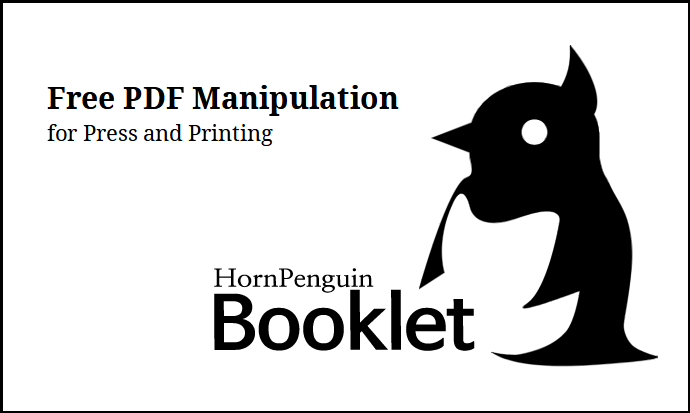

HornPenguin Booklet#
HornPenguin Booklet is a free and open source booklet generating program. It can reorder the pages, rotate and transform for fold signature, and add printing markers for color printing.
You can print your own book signatures and simple pamplet with your home printer.
Support diffence signature size from 4 to 32.
Change page size during generating signature.
Left riffling direction is supported for old Asian and Arabic bookbindings.
Printing markers; trim, CMYK, signature proof are supported.
Structure of Program#
Interface |
PDF modulation |
PDF generation |
GUI(tkinter) |
PyPDF2 |
reportlab |
CUI(argparse) |
User Guide